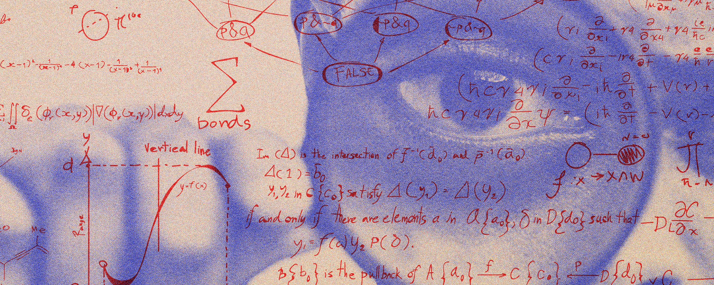
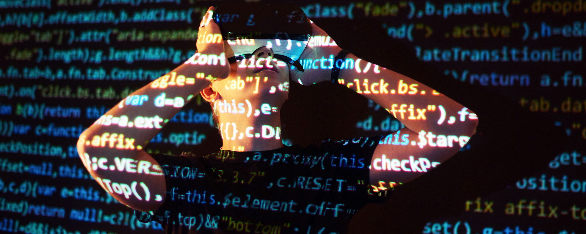

La materia de Física en la carrera de Informática aborda los
principios fundamentales del movimiento, energía y fuerzas, con un
enfoque en su aplicación dentro de la computación y la tecnología.
Los estudiantes adquieren una comprensión sólida sobre conceptos
físicos esenciales, como la mecánica y la electricidad, que son
clave en el diseño y funcionamiento del hardware, dispositivos
electrónicos y simulaciones computacionales. Esta formación
permite a los futuros profesionales aplicar la física en áreas
como la robótica, la realidad virtual y el desarrollo de software
que simula fenómenos físicos complejos.
La materia de Matemáticas en la carrera de Informática es
fundamental para desarrollar habilidades analíticas y de
resolución de problemas. A través del estudio de áreas como el
álgebra, el cálculo, la estadística y la lógica matemática, los
estudiantes adquieren las bases necesarias para comprender y
aplicar modelos matemáticos en el desarrollo de algoritmos,
optimización de sistemas y análisis de datos. Las matemáticas
también son esenciales para áreas como la inteligencia artificial,
la criptografía y la teoría de la computación, permitiendo a los
futuros profesionales abordar desafíos complejos en el ámbito
tecnológico.
La materia de Programación en la carrera de Informática es
esencial para que los estudiantes desarrollen habilidades para
crear, modificar y optimizar software. A través del estudio de
distintos lenguajes de programación, estructuras de datos y
paradigmas de desarrollo, los estudiantes aprenden a diseñar
algoritmos eficientes y soluciones prácticas para resolver
problemas tecnológicos. La programación es la base para áreas como
el desarrollo de aplicaciones, la ingeniería de software, la
inteligencia artificial y la gestión de sistemas, permitiendo a
los futuros profesionales transformar ideas en soluciones
digitales funcionales.
La materia de Programación Web en la carrera de Informática se
centra en el diseño y desarrollo de sitios y aplicaciones web
dinámicas. Los estudiantes aprenden lenguajes y tecnologías clave
como HTML, CSS, JavaScript, y frameworks como React o Angular, que
les permiten crear interfaces interactivas y optimizadas para la
web. Además, se aborda el uso de servidores, bases de datos y la
comunicación cliente-servidor mediante tecnologías como PHP,
Node.js o Python. Esta materia es esencial para quienes buscan
especializarse en el desarrollo de plataformas web, e-commerce y
aplicaciones accesibles desde cualquier dispositivo conectado a
internet.
La materia de Fundamentos Digitales en la carrera de Informática
proporciona los conocimientos básicos sobre cómo funcionan los
sistemas digitales. Los estudiantes aprenden sobre los principios
de la lógica digital, las operaciones binarias, y el diseño de
circuitos digitales, incluyendo compuertas lógicas, flip-flops y
registros. Además, se exploran temas como la representación de
datos, los sistemas de numeración y el funcionamiento interno de
los procesadores. Estos conceptos son fundamentales para
comprender cómo se diseñan y optimizan los componentes de hardware
y los sistemas computacionales, siendo clave en el desarrollo de
tecnología eficiente y avanzada.
La materia de Metodología de la Investigación en la carrera de
Informática enseña a los estudiantes los principios y técnicas
para llevar a cabo investigaciones rigurosas en el ámbito
científico y tecnológico. Se exploran las etapas del proceso de
investigación, desde la formulación de preguntas y hipótesis hasta
la recolección y análisis de datos. Los estudiantes aprenden a
diseñar proyectos de investigación, aplicar métodos cuantitativos
y cualitativos, y presentar resultados de manera clara y precisa.
Esta materia es crucial para desarrollar una mentalidad analítica
y crítica, y es fundamental en la creación de soluciones
innovadoras basadas en evidencia en el campo de la informática.



Carrera de Informática
Cronograma semanal aniversario 2024
Celebra con nosotros una semana llena de actividades académicas, culturales y deportivas en honor al aniversario de la Universidad Mayor de San Andrés, podrás participar en conferencias, exposiciones, competencias y eventos artísticos que resaltan el legado y compromiso de nuestra universidad con la educación y la sociedad. ¡No te pierdas esta oportunidad de formar parte de una celebración histórica junto a toda la comunidad universitaria!
Imformación